A complete GATE & IES treatment of the PN junction diode — from energy-band physics and depletion-layer formation through I–V characteristics, load-line analysis, rectifiers, filters, Zener regulation, and waveform-shaping circuits. Built from Boylestad & Nashelsky, Sedra & Smith, and Millman & Halkias.
The PN junction is the most fundamental building block in electronics. Every BJT, MOSFET, solar cell, and LED contains one or more PN junctions. Understanding the physics here unlocks the entire tree of semiconductor devices.
Pure silicon has four valence electrons. At 0 K it behaves like a perfect insulator. At room temperature (300 K), thermal energy breaks some covalent bonds creating electron–hole pairs. Both carriers contribute to current — electrons move opposite to the electric field; holes move with the field.
When silicon is doped with pentavalent atoms (Phosphorus, Arsenic) it becomes N-type — electrons are majority carriers (n ≫ p). When doped with trivalent atoms (Boron, Aluminium) it becomes P-type — holes are majority carriers (p \gg n).[1]
When a P-type and N-type semiconductor are brought into contact, a remarkable self-organizing process begins — one that requires no external power and happens purely from the laws of diffusion and electrostatics.
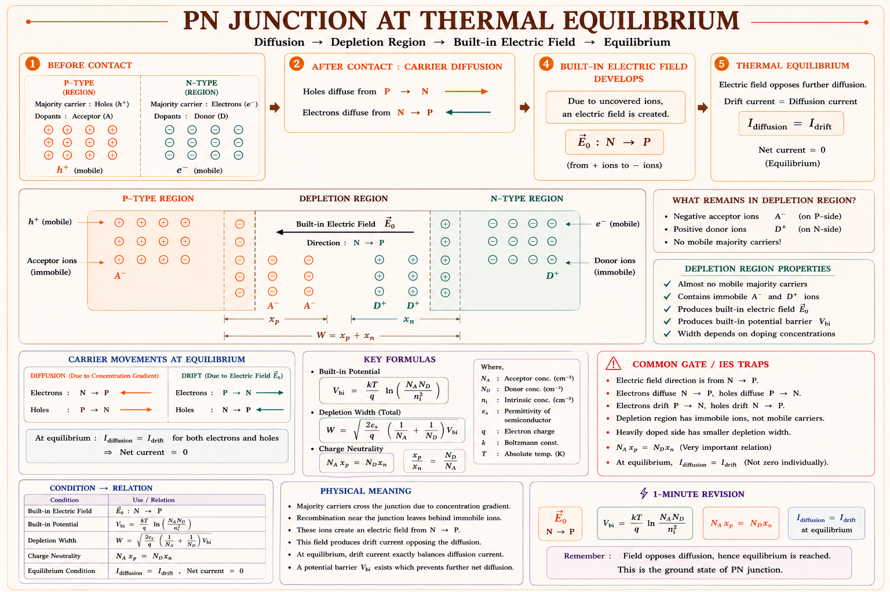
Fig 1.1 — PN junction at thermal equilibrium: depletion region with immobile ions and built-in electric field \(E_0\) pointing from N to P.
Diagram: Aarova AI. Concept: Boylestad & Nashelsky [1], Sedra & Smith [2]
The formation process has three stages:
Stage 1 — Diffusion: Holes from P-side diffuse into N-side (high→low concentration). Electrons from N-side diffuse into P-side. This is purely Fick's law of diffusion — carriers move down their concentration gradient.
Stage 2 — Ion Exposure: As holes leave the P-side, they expose negatively-charged acceptor ions (B⁻) that cannot move. As electrons leave the N-side, they expose positively-charged donor ions (P⁺). A region devoid of mobile carriers — the depletion region — forms near the junction.
Stage 3 — Equilibrium: The exposed ions create a built-in electric field \(E_0\) pointing from N→P. This field opposes further diffusion. Equilibrium is reached when the drift current (due to \(E_0\)) exactly cancels the diffusion current. No net current flows at equilibrium.
The built-in potential (contact potential) \(V_0 \approx 0.7\text{ V}\) for silicon and \(\approx 0.3\text{ V}\) for germanium at 300 K. You cannot measure this with a voltmeter across an unbiased PN junction — the metal-semiconductor contacts create equal and opposite potentials that cancel exactly. \(V_0\) is responsible for the energy barrier that controls carrier injection under forward bias.
From Boltzmann statistics, the built-in potential is given by:[2]
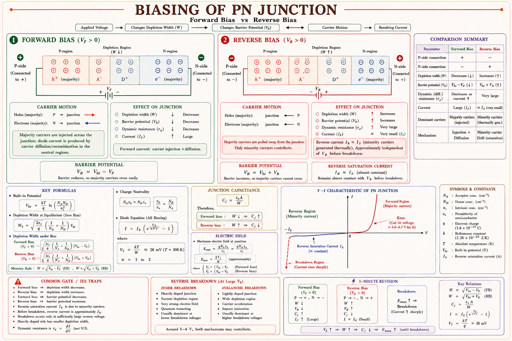
Fig 1.2 — Forward bias narrows the depletion region allowing large current; reverse bias widens it allowing only the tiny saturation current \(I_0\).
Forward Bias: The positive terminal of the battery is connected to the P-side. This reduces the built-in potential barrier from \(V_0\) to \((V_0 - V_F)\). The depletion width narrows. Majority carrier injection occurs — holes from P are injected into N and electrons from N are injected into P. A large current flows, rising exponentially with applied voltage.
Reverse Bias: The positive terminal is connected to the N-side. This increases the barrier to \((V_0 + V_R)\). The depletion width widens. Majority carriers are pulled away from the junction. Only minority carriers (holes in N, electrons in P) drift across — giving a tiny, nearly constant reverse saturation current \(I_0\) (also called \(I_s\) or \(I_{sat}\)), typically in the nanoampere range for silicon.[1]
The 0.7 V is not a "voltage drop from a resistor" — it is the threshold potential needed to overcome the built-in barrier. Below 0.7 V some current flows (it grows exponentially), but for circuit analysis we use the ideal 0.7 V cut-in approximation. In germanium this is ≈ 0.3 V.
The depletion width extends more into the lightly doped side. If \(N_A\) ≫ \(N_D\), the depletion region extends mostly into the N-side. This comes from charge neutrality: \(q \cdot N_A \cdot x_p = q \cdot N_D \cdot x_n\), therefore \(\frac{x_p}{x_n} = \frac{N_D}{N_A}\). Total width \(W = x_p + x_n\).
where \(\varepsilon_s = \varepsilon_0 \cdot \varepsilon_r\) is the permittivity of silicon (\(\varepsilon_r \approx 11.7\)). Notice \(W \propto \sqrt{V_0 + V_R}\) — this fact is used in varactor (voltage-variable capacitor) diode design.
A PN junction stores charge in two distinct ways, giving rise to two capacitances that are important in high-frequency and switching applications:[2]
William Shockley derived the fundamental equation governing PN junction behavior in 1949. This single equation describes both forward and reverse bias behavior:[1,2]
At \(V_D = 0\): \(I_D = I_0(e^0 - 1) = 0\). ✓ No bias, no current.
Under large reverse bias (\(V_D \ll 0\)): \(e^{V_D/\eta V_T} \to 0\), so \(I_D \approx -I_0\).
The tiny saturation
current.
Under forward bias >0.1 V: the −1 is negligible, so \(I_D \approx I_0 \cdot e^{V_D/\eta
V_T}\) — pure exponential
growth. A 60 mV increase in \(V_D\) multiplies \(I_D\) by 10 (one decade per 60 mV for \(\eta =
1\)).
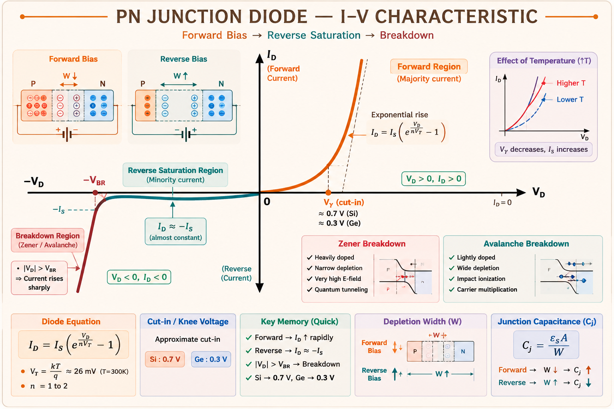
Fig 2.1 — Complete I–V characteristic of a PN junction diode showing forward exponential rise, reverse saturation, and breakdown.
Concept: Boylestad & Nashelsky [1], Millman & Halkias [3]
Temperature affects diode behavior in two important ways that are tested frequently in GATE and IES:[1]
| Parameter | Effect of Increasing Temperature | Magnitude | Dominant in |
|---|---|---|---|
| \(I_0\) (saturation current) | Increases rapidly | Doubles every 10°C (Si) | Reverse region |
| \(V_\gamma\) (cut-in / knee voltage) | Decreases | −2 mV/°C | Forward region |
| Thermal voltage \(V_T\) | Increases | +0.087 mV/°C | Slope of I-V |
| Breakdown voltage \(V_Z\) (Zener) | Decreases (low \(V_Z\)) | Negative temp coefficient < 5 V | Zener mechanism |
| Breakdown voltage \(V_{BR}\) (Avalanche) | Increases (high \(V_Z\)) | Positive temp coefficient > 7 V | Avalanche mechanism |
"HOTI — HOT = Increase of \(I_0\)" — As temperature rises, \(I_0\) doubles every 10°C. The forward voltage \(V_F\) decreases at −2 mV/°C. So a diode at 80°C needs about (0.7 − 0.002 × 80) ≈ 0.54 V to conduct — not 0.7 V.
A diode is a non-linear device — its resistance is not constant. We define two types of resistance depending on whether we look at a DC operating point or a small AC signal superimposed on it.[1]
Static resistance is the simple DC resistance at a given operating point Q on the I–V curve. It is the ratio of the DC voltage to the DC current at that point:
This is simply Ohm's law applied at one point on the curve. It equals the inverse slope of a line drawn from the origin to the Q-point. Since the I–V curve is exponential, \(R_{DC}\) changes drastically — it is large in the low-current region and small when the diode is heavily conducting. It is used in DC circuit analysis (e.g., finding peak diode current in rectifiers).
When a small AC signal is superimposed on the DC bias, the diode looks like a small resistor for that signal. This dynamic (or incremental) resistance is the slope of the tangent to the I–V curve at the Q-point:
This formula is derived by differentiating the Shockley equation. It is one of the most important formulas in small-signal electronics — the same concept appears in BJT \(r_e = V_T/I_C\) and FET \(g_m\) analysis.[2]
In practice, the silicon body itself has an ohmic resistance \(r_B\) (typically 0.1–5 Ω) that adds to \(r_d\) at high currents. The complete small-signal model of a diode is just \(r_d + r_B\). In most GATE problems, \(r_B\) is negligible compared to external resistors.
| Parameter | Definition | When Used | Depends On |
|---|---|---|---|
| \(R_{DC}\) (static) | \(V_D / I_D\) at Q-point | DC analysis, rectifier peak current | Operating point |
| \(r_d\) (dynamic) | \(\Delta V_D / \Delta I_D = \eta V_T / I_{DQ}\) | Small-signal AC analysis | Q-point current only |
| \(r_B\) (bulk) | Ohmic body resistance | High-current forward bias | Geometry, doping |
| \(r_r\) (reverse) | \(V_R / I_R\) (very large) | Leakage calculation | Typically MΩ range |
Q. An ideal diode (η = 1) is biased with a DC current of 26 mA at 300 K. A small AC signal is superimposed. What is the small-signal resistance of the diode?
The load line is a graphical technique to find the exact operating point (Q-point) of a diode circuit without solving the Shockley equation numerically. It is the intersection of two constraints — the device equation (the diode curve) and the circuit equation (the load line).[1]
Consider the basic circuit: supply voltage V_S in series with load resistor R_L and a diode. Applying KVL around the loop:
This is a straight line on the I–V plane. It has two key intercepts:
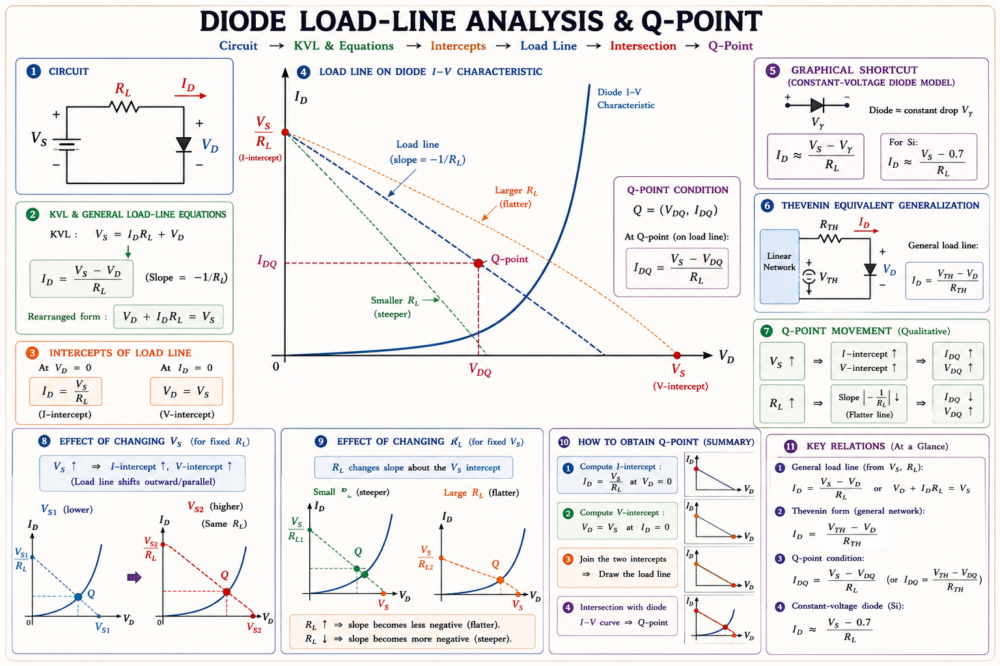
Fig 4.1 — Load line intersects the diode I–V characteristic at the Q-point (\(V_{DQ}\), \(I_{DQ}\)). Changing \(R_L\) rotates the load line about the \(V_S\) intercept.
The Q-point gives the actual DC operating values: the diode voltage \(V_{DQ}\) and diode current \(I_{DQ}\). Once found, the voltage across \(R_L\) is simply \(V_{RL} = V_S - V_{DQ}\) and the power dissipated in the diode is \(P_D =\) \(V_{DQ} \cdot I_{DQ}\).
For most GATE problems, model the diode as: forward biased → short circuit (0 V drop) or ideal voltage source (0.7 V). Only use the load line when the problem specifically asks about it graphically or when the exact Q-point value matters.
A Zener diode is a specially designed PN junction intended to operate in the reverse breakdown region. Unlike a regular diode where breakdown is destructive, the Zener is manufactured with controlled breakdown characteristics and can sustain reverse breakdown safely (within power ratings).[1,3]
At \(V_Z\) ≈ 5–7 V, both mechanisms coexist and nearly cancel — the temperature coefficient is close to zero. This is why 5.6 V and 6.2 V Zener diodes are preferred in precision voltage reference applications. GATE questions frequently ask: "A 4.7 V Zener — which mechanism?" → Zener (tunneling). "A 15 V Zener — which mechanism?" → Avalanche.
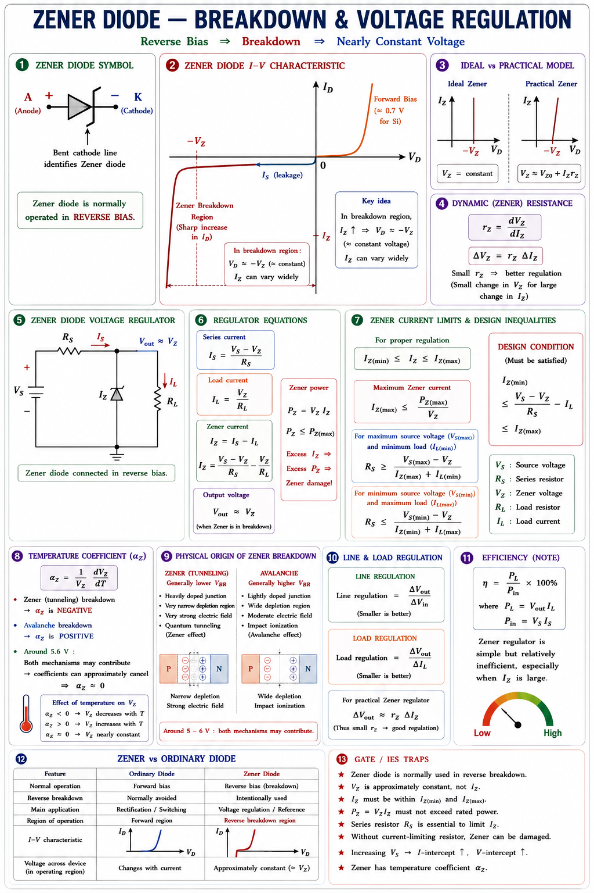
Fig 5.1 — Zener diode circuit symbol (note the bent cathode leads) and its I–V characteristic showing the sharp, nearly vertical reverse breakdown region used for voltage regulation.
For circuit analysis, the Zener diode in its breakdown region is modeled as an ideal voltage source \(V_Z\) in series with a small dynamic impedance r_Z:[1]
An ideal Zener has r_Z = 0 (perfectly vertical breakdown characteristic). A real Zener has a small but non-zero r_Z, meaning the output voltage changes slightly with load current. The smaller r_Z, the better the regulation.
Q. In a Zener diode with breakdown voltage of 3.3 V, the predominant breakdown mechanism is:
Q. Which statement about Zener and Avalanche breakdown temperature coefficients is correct?
Rectification is the conversion of alternating current (AC) into unidirectional (pulsating DC) current using the one-way conduction property of diodes. Rectifiers are the first block in every DC power supply.[3]
The simplest rectifier uses a single diode. During the positive half-cycle, the diode conducts and current flows through \(R_L\). During the negative half-cycle, the diode is reverse biased and no current flows.
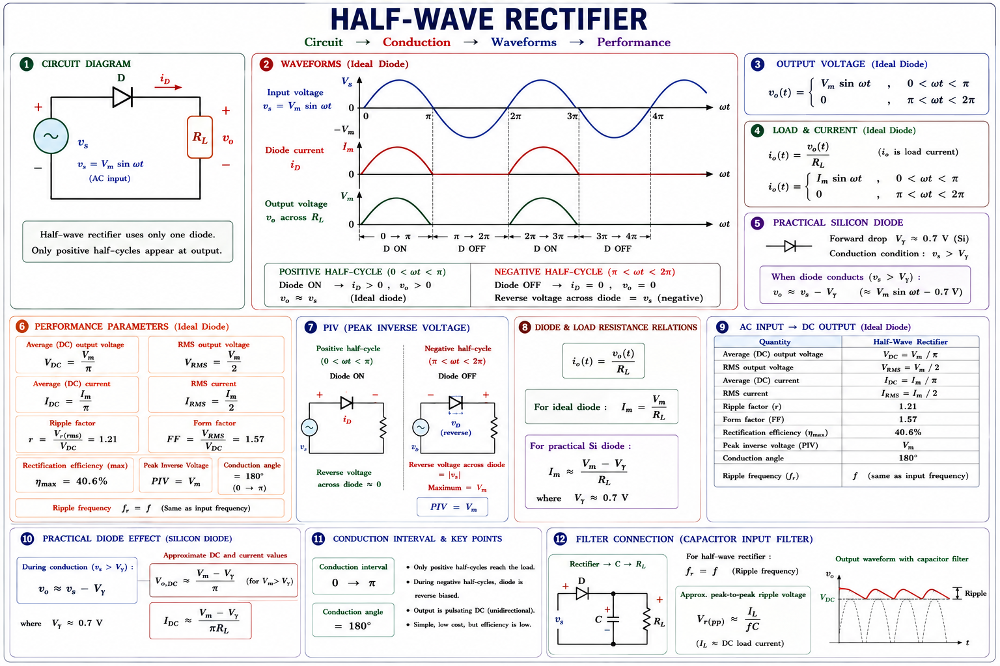
Fig 6.1 — Half-wave rectifier: only positive half-cycles appear at output. The negative half-cycle is blocked by the reverse-biased diode.
| Parameter | Formula | Value (ideal) |
|---|---|---|
| DC (average) output voltage | \(V_{DC} = \frac{V_m}{\pi}\) | \(\approx 0.318 V_m\) |
| RMS output voltage | \(V_{rms} = \frac{V_m}{2}\) | \(0.5 V_m\) |
| DC current | \(I_{DC} = \frac{V_{DC}}{R_L} = \frac{V_m}{\pi R_L}\) | — |
| Ripple factor (\(\gamma\)) | \(\gamma = \frac{V_{ac}}{V_{DC}} = \sqrt{\left(\frac{V_{rms}}{V_{DC}}\right)^2 - 1} = 1.21\) | 1.21 (high) |
| Rectification efficiency | \(\eta = \frac{P_{DC}}{P_{AC}} = \frac{V_{DC}^2/R_L}{V_{rms}^2/R_L} = 40.6\%\) | 40.6% |
| Peak inverse voltage (PIV) | \(\text{PIV} = V_m\) | \(V_m\) |
| Ripple frequency | = Supply frequency \(f\) | \(f\) (50 Hz) |
| Transformer utilization factor | \(\text{TUF} = 0.287\) | 0.287 (poor) |
Uses a centre-tap transformer and two diodes. During the positive half-cycle D1 conducts; during the negative half-cycle D2 conducts. Both half-cycles appear at the output — hence "full-wave."[1,3]
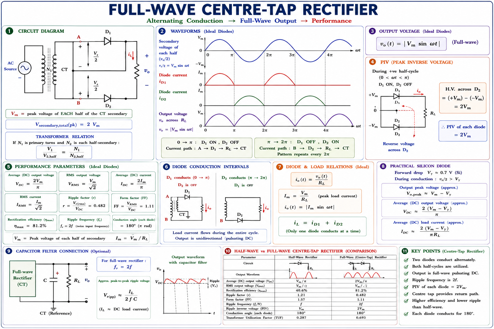
Fig 6.2 — Full-wave centre-tap rectifier: D1 conducts during positive half-cycle; D2 conducts during negative half-cycle. Both contribute to the output.
Uses four diodes in a bridge configuration. No centre-tap transformer required. During the positive half-cycle D1 and D3 conduct; during the negative half-cycle D2 and D4 conduct. This is the most widely used rectifier configuration in practice.[1]
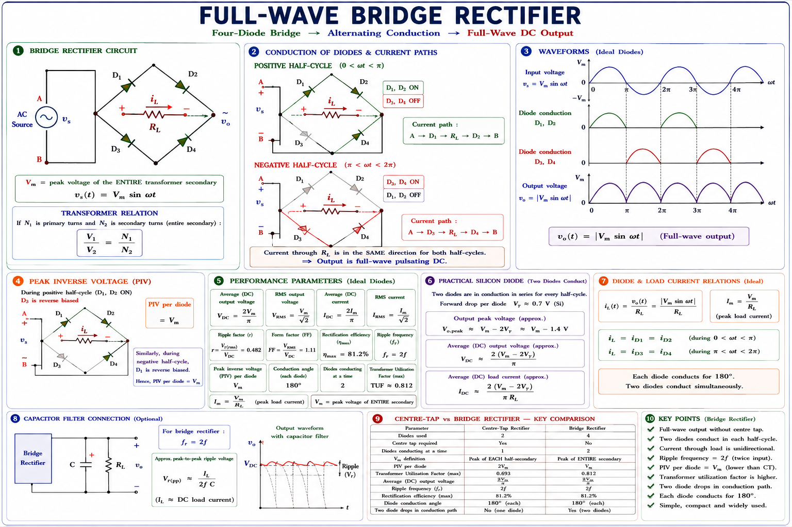
Fig 6.3 — Bridge rectifier: four diodes in a bridge arrangement. No centre-tap transformer needed. PIV per diode = \(V_m\) (half that of the CT rectifier for same output).
| Parameter | Half-Wave | Full-Wave CT | Bridge |
|---|---|---|---|
| Number of diodes | 1 | 2 | 4 |
| \(V_{DC}\) (avg output) | \(\frac{V_m}{\pi} = 0.318 V_m\) | \(\frac{2V_m}{\pi} = 0.636 V_m\) | \(\frac{2V_m}{\pi} = 0.636 V_m\) |
| \(V_{rms}\) | \(\frac{V_m}{2} = 0.5 V_m\) | \(\frac{V_m}{\sqrt{2}} = 0.707 V_m\) | \(\frac{V_m}{\sqrt{2}} = 0.707 V_m\) |
| Ripple factor \(\gamma\) | 1.21 (worst) | 0.482 | 0.482 |
| Efficiency \(\eta\) | 40.6% | 81.2% | 81.2% |
| PIV per diode | \(V_m\) | \(2V_m\) | \(V_m\) |
| Ripple frequency | \(f\) | \(2f\) | \(2f\) |
| TUF | 0.287 | 0.693 | 0.812 |
| Transformer | Simple | Centre-tap (costly) | Simple |
In the centre-tap rectifier, when D1 is conducting, the full secondary voltage (\(2V_m\)) appears across D2 in reverse. So PIV = \(2V_m\), not \(V_m\). This is the most commonly confused point. In the bridge rectifier, PIV = \(V_m\) per diode — two diodes share the reverse voltage.
The pulsating DC output of a rectifier must be smoothed before use. A filter reduces the ripple — the AC component superimposed on the DC level. The most common filter is the capacitor filter.[1,3]
A large capacitor C is connected in parallel with \(R_L\). During the conduction phase, the diode conducts and C charges up to near \(V_m\). During the non-conduction phase, the diode is reverse biased and C slowly discharges through \(R_L\), maintaining the output voltage. The output has a small ripple voltage \(\Delta V\).
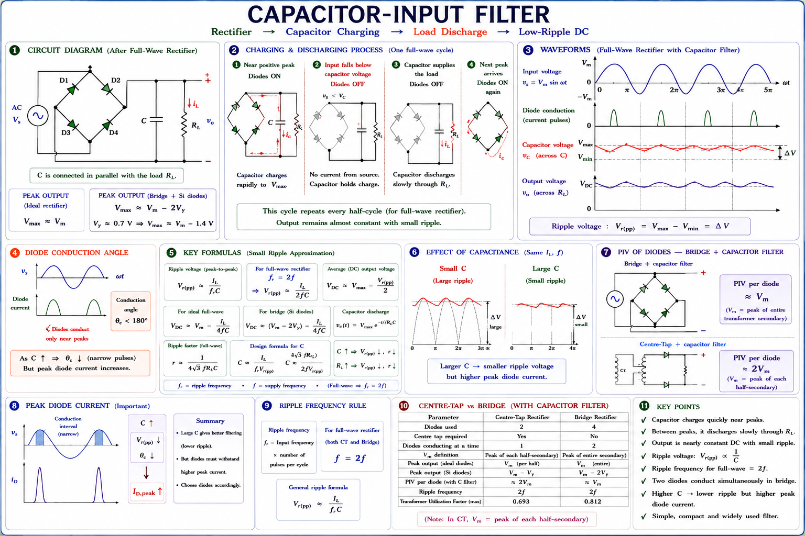
Fig 7.1 — Capacitor filter: output stays near \(V_m\) with only a small ripple \(\Delta V\). The capacitor charges rapidly then discharges slowly through \(R_L\).
| Filter Type | Component | Effect | Best For |
|---|---|---|---|
| Capacitor (shunt C) | C in parallel with \(R_L\) | Reduces ripple — larger C = lower ripple | High-voltage, low-current loads |
| Inductor (series L) | L in series with load | Opposes ripple current changes — larger L = lower ripple | Low-voltage, high-current loads |
| LC (π or L-section) | L in series + C in parallel | Best ripple reduction — combines both effects | Power supply design |
| CLC (π-filter) | C-L-C combination | Very low ripple | Audio, precision circuits |
Voltage regulation describes how well a power supply maintains its output voltage as the load current changes. A perfect regulator would have zero output voltage change from no-load to full-load.[1]
The simplest voltage regulator uses a Zener diode in reverse breakdown to maintain a constant output voltage \(V_Z\) across a varying load. A series resistor \(R_S\) limits the current and drops the excess voltage from the supply.[1]
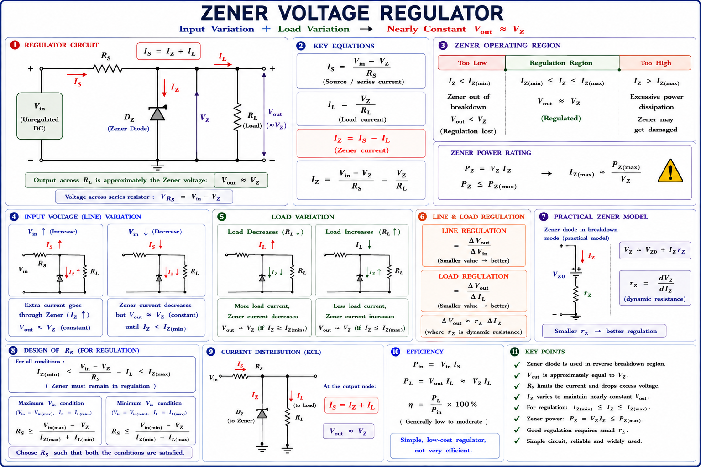
Fig 8.1 — Zener voltage regulator: \(R_S\) drops the excess voltage; the Zener maintains \(V_Z\) across \(R_L\) despite variations in \(V_{in}\) or \(R_L\).
For the Zener to remain in regulation: \(I_Z\) must stay between \(I_{Z(min)}\) and \(I_{Z(max)}\) at all operating conditions. Worst case for \(I_{Z(max)}\): maximum \(V_{in}\) AND minimum \(I_L\) (no load). Worst case for \(I_{Z(min)}\): minimum \(V_{in}\) AND maximum \(I_L\). Choose \(R_S\) to satisfy both constraints.
Q. A Zener diode (\(V_Z\) = 5 V, \(I_{Z(min)}\) = 5 mA, \(I_{Z(max)}\) = 50 mA) is to regulate voltage from \(V_{in}\) = 10 V. Load current ranges from 0 to 25 mA. Find \(R_S\).
Worst case for \(R_{S(max)}\): \(V_{in}\) = 10 V, \(I_L\) = 0 (no load). Need \(I_Z \le\) 50 mA → \(R_{S(min)}\) = (10 − 5)/0.050 = 100 Ω.
Worst case for \(R_{S(min)}\): \(V_{in}\) = 10 V, \(I_L\) = 25 mA. Need \(I_Z \ge\) 5 mA → \(I_S = I_Z +\) \(I_L\) = 5 + 25 = 30 mA → \(R_{S(max)}\) = (10 − 5)/0.030 = 167 Ω.
∴ Choose \(R_S\) in range 100–167 Ω. Standard choice: \(R_S\) = 150 Ω.
A clipper (also called a limiter) is a wave-shaping circuit that removes portions of the input waveform above or below a reference level, without distorting the retained portion. They use diodes to switch between conducting and blocking states.[1,3]
The diode is in series with the load. When the diode is reverse biased, no current flows and \(V_o\) = 0. When forward biased, \(V_o = V_{in}\) (approximately). This clips one complete half of the waveform.
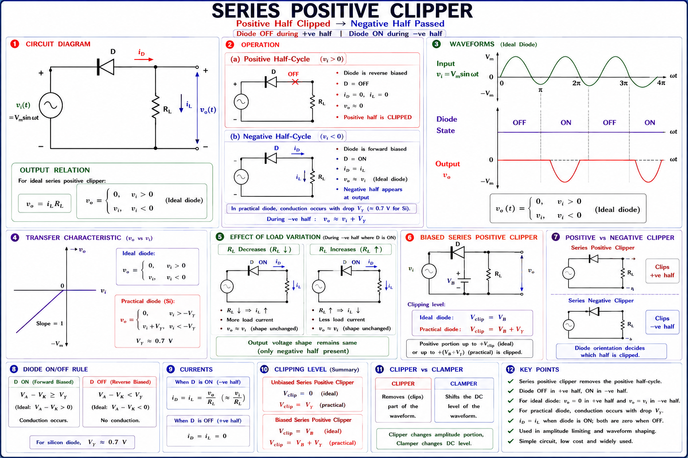
Fig 9.1 — Series positive clipper: the diode blocks the positive half-cycle. Only the negative half appears at \(V_o\) across \(R_L\).
The diode is in parallel with the load. When the diode conducts, it clamps the output to 0.7 V (Si). When reverse biased, \(V_o = V_{in}\). This is more commonly used because it can be combined with a bias voltage to clip at any desired level.
Adding a DC bias voltage \(V_B\) in series with the diode shifts the clipping level. The diode conducts when \(V_{in} > V_B\) (for forward-biased bias), and the output is clipped at \(V_B\).[1]
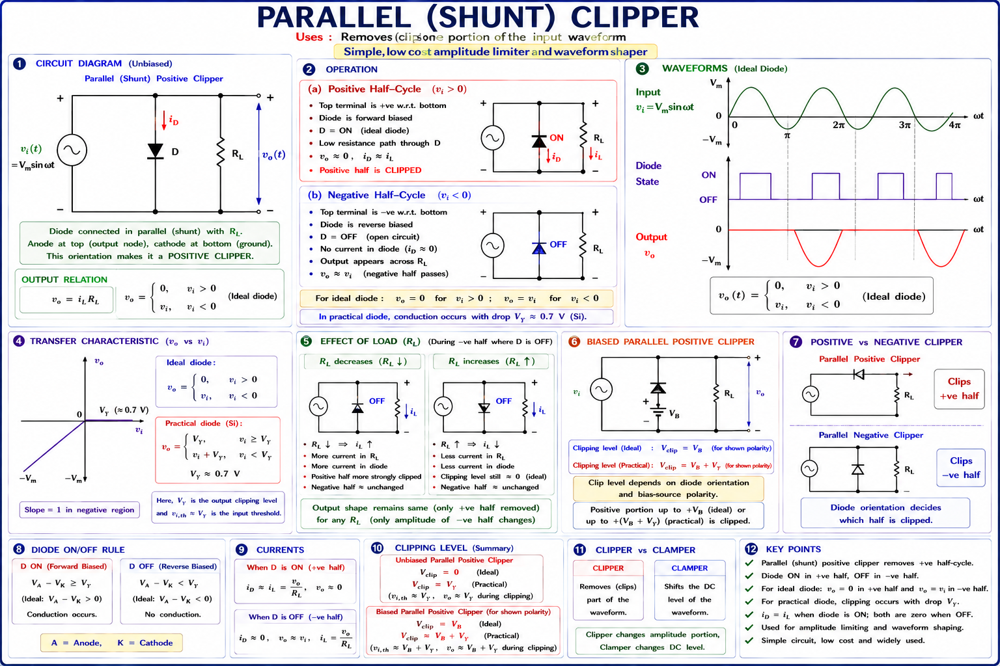
Fig 9.2 — Biased clippers: positive biased clipper removes input above \(+V_B\) (left); negative biased clipper removes input below \(-V_B\) (right).
| Clipper Type | Diode Position | Output | Application |
|---|---|---|---|
| Series positive clipper | Diode in series (anode at input) | Negative half passes | Half-wave rectifier |
| Series negative clipper | Diode reversed in series | Positive half passes | Waveform shaping |
| Parallel positive clipper | Diode in parallel (cathode to output) | Clips above 0.7 V | Overvoltage protection |
| Parallel negative clipper | Diode reversed in parallel | Clips below −0.7 V | Signal limiting |
| Biased positive clipper | Parallel + \(V_B\) battery | Clips above \(+V_B\) | AM demodulation |
| Double clipper | Two diodes \(\pm V_B\) | Clips both halves | Sine to square wave |
A clamper (DC restorer) shifts the entire waveform up or down so that the positive or negative peak is clamped to a specific DC level. Unlike clippers which remove part of the signal, clampers preserve the shape of the waveform and simply shift it in the voltage axis.[1,3]
Clipper → removes/clips part of the waveform. Output amplitude < input
amplitude.
Clamper → shifts the entire waveform. Peak-to-peak amplitude
stays the same — only the DC level changes. The capacitor in a clamper stores charge to create
this DC shift.
A positive clamper lifts the input signal so that the negative peaks are clamped to 0 V (the diode prevents the output from going below 0). The output rides on a positive DC level equal to \(V_m\).[1]
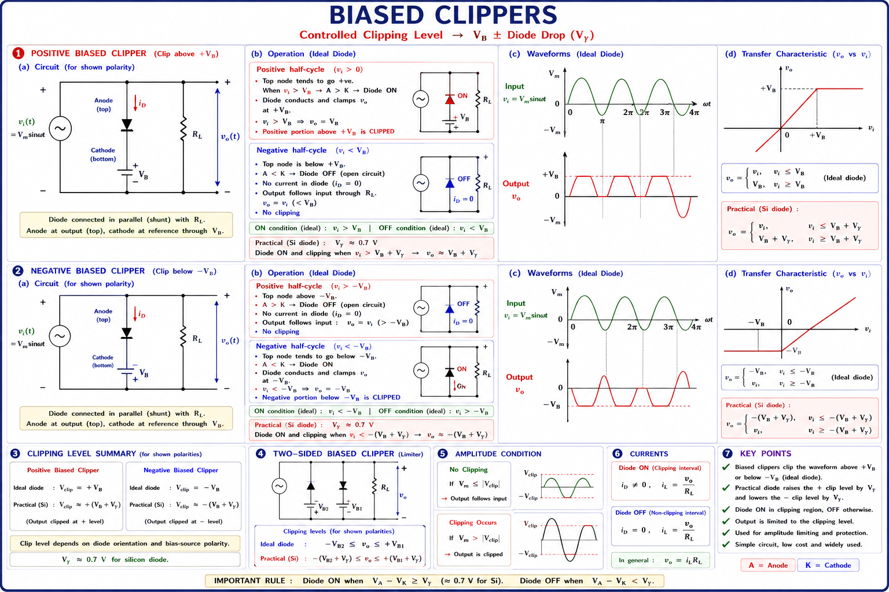
Fig 10.1 — Positive clamper: during the negative half-cycle D conducts and C charges to \(V_m\). Subsequently C adds \(V_m\) to the input, lifting the waveform so negative peaks touch 0 V.
The diode is reversed. During the positive half-cycle, the diode conducts and the capacitor charges to \(V_m\) with the polarity that subtracts from the input. The output is shifted downward so that the positive peaks are clamped to 0 V (or to \(-V_B\) if a bias is added).
| Clamper Type | Diode Polarity | Result | Peak-to-Peak |
|---|---|---|---|
| Positive clamper | Anode to ground (conducts −ve half) | Negative peaks at 0 V; signal moves up by \(V_m\) | \(2V_m\) (unchanged) |
| Negative clamper | Cathode to ground (conducts +ve half) | Positive peaks at 0 V; signal moves down by \(V_m\) | \(2V_m\) (unchanged) |
| Biased positive clamper | Same as positive + \(V_B\) | Negative peaks at \(+V_B\) | \(2V_m\) (unchanged) |
| Biased negative clamper | Same as negative + \(V_B\) | Positive peaks at \(-V_B\) | \(2V_m\) (unchanged) |
Step 1: Find when the diode conducts (which half-cycle). Step 2: At that moment, C charges to the input voltage (polarity such that output = 0 V at the diode clamp). Step 3: For the other half-cycle, diode is off, C voltage adds to input. Step 4: Output = \(V_{in} + V_C\) (algebraic). The capacitor holds its charge (large RC time constant assumed), so \(V_C\) = constant = \(V_m\).
Q. A sine wave of peak amplitude 10 V is applied to a positive clamper (ideal diode, no bias). What is the peak positive output voltage?
Step 1 — Check if diode is forward biased: Supply = 5 V > \(V_\gamma\) = 0.7 V → Yes, diode conducts.
Step 2 — Apply KVL:
Step 3 — Solve:
Step 4 — Voltage across R: \(V_R\) = \(I_D\) × R = 4.3 × 10⁻³ × 1000 = 4.3 V
Verify: 0.7 + 4.3 = 5.0 V ✓
Step 1 — Transformer secondary voltage:
Step 2 — DC output voltage (with diode drops, 2 diodes in bridge):
For ripple calculation, use ideal: \(V_{DC} \approx 31.1\text{ V}\)
Step 3 — Ripple voltage (full-wave, f_ripple = 2×50 = 100 Hz):
Step 4 — Ripple factor:
The capacitor filter reduces the ripple factor from 0.482 (without filter) to just 2.9% — an excellent improvement.
Analysis:
D1 conducts when \(V_{in} > +5\text{ V}\) → output clipped at +5 V above this level.
D2
conducts when
\(V_{in} < -8\text{ V}\) → output clipped at −8 V below this level.
Between −8 V and +5 V: neither diode conducts → \(V_o = V_{in}\) (linear region).
Output waveform: Flat at +5 V when \(V_{in} > 5\text{ V}\), follows sine wave between −8 V and +5 V, flat at −8 V when \(V_{in} < -8\text{ V}\).
Result: Output voltage range = −8 V to +5 V. Peak-to-peak = 13 V (compare to 40 V input peak-to-peak).
Ask any question on this chapter — diode physics, rectifier calculations, clipper waveforms, Zener regulation. Get step-by-step answers in the style of a GATE coaching faculty.
\(V_0 = \frac{kT}{q}\cdot\ln\left(\frac{N_A\cdot N_D}{n_i^2}\right) \approx 0.7\text{ V (Si)}\). Depletion width \(W \propto \sqrt{V_0+V_R}\). \(C_T = \frac{\varepsilon A}{W}\) (reverse). \(C_D = \tau\cdot g_m\) (forward). \(V_T = 26\text{ mV}\) at 300 K.
\(I_D = I_0\left(e^{V_D/\eta V_T} - 1\right)\). Current doubles every 10°C (\(I_0\)). Forward voltage decreases at −2 mV/°C. Dynamic resistance \(r_d = \frac{\eta V_T}{I_{DQ}}\).
HW: \(V_{DC}=\frac{V_m}{\pi}\), \(\gamma=1.21\), \(\eta=40.6\%\), \(\text{PIV}=V_m\), \(f_{\text{ripple}}=f\). FW/Bridge: \(V_{DC}=\frac{2V_m}{\pi}\), \(\gamma=0.482\), \(\eta=81.2\%\), \(f_{\text{ripple}}=2f\). CT: \(\text{PIV}=2V_m\). Bridge: \(\text{PIV}=V_m\).
Zener (tunneling) <5V: −ve TC. Avalanche (impact) >7V: +ve TC. Zero TC at ~6V. \(I_S = \frac{V_{\text{in}}-V_Z}{R_S}\). Design: check \(I_{Z(\text{min})}\) and \(I_{Z(\text{max})}\) at extremes.
Series: diode in series — blocks one half. Parallel: diode in shunt — clamps to 0.7 V. Biased: shifts clipping level to \(V_B\). Double: clips both halves.
Positive clamper: −ve peak → 0V; output shifts up by \(V_m\). Negative clamper: +ve peak → 0V; output shifts down by \(V_m\). Peak-to-peak = \(2V_m\) (unchanged).
Bipolar Junction Transistors (BJT) — CB, CE, CC configurations, active/saturation/cutoff regions, hybrid-π model, h-parameters, frequency response, amplifier analysis, and complete GATE & IES treatment.
All technical content is derived from the following standard textbooks. All explanations, derivations, diagrams, and examples are original to Aarova AI.